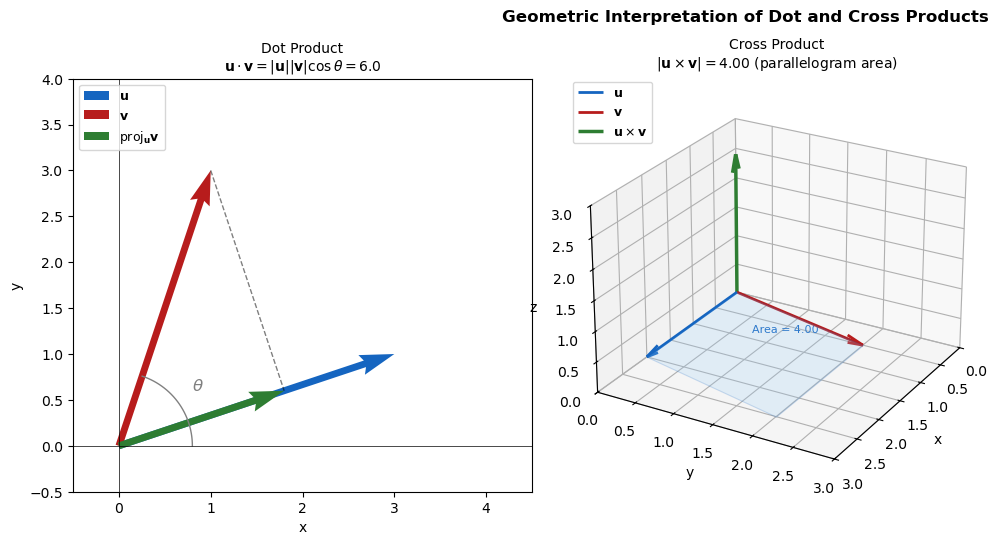

Chapter 11: Linear Algebra & Matrices#
Topics Covered:
Vector operations: dot and cross products
Matrices as 2D NumPy arrays
Matrix arithmetic and multiplication
Solving systems of linear equations with
np.linalg.solveDeterminant, inverse, and rank
Chemical engineering application: material balances
Motivation: Why Do We Need Matrices?#
Consider this simple two-stream mixing problem from your material-balance course:
Feed 1: 40 mol/s, 40% species A ──►┐
├──► Mixed stream: F_out mol/s, 55% A
Feed 2: F2 mol/s, 80% species A ──►┘
Two unknowns: F2 and F_out. Two equations:
With only 2 equations this is manageable by hand. But what if you had 10 streams and 10 species? Or 50? Substitution would be hopeless.
The key observation: both equations are linear — no squares, no exponentials. That means the entire system can be written as one compact expression:
How do we solve for \(\mathbf{x}\)? Multiply both sides on the left by \(A^{-1}\) (the inverse of \(A\)):
This is the matrix equivalent of dividing both sides of a scalar equation by \(a\): \(ax = b \Rightarrow x = b/a\).
In Python, np.linalg.solve(A, b) computes \(A^{-1}\mathbf{b}\) for us — efficiently and accurately — in one call.
import numpy as np
# Two-stream mixer: find F2 and F_out
# Equation 1 (overall): F2 - F_out = -40 → coefficients: [1, -1]
# Equation 2 (species A): 0.80*F2 - 0.55*F_out = -16 → coefficients: [0.80, -0.55]
A = np.array([[ 1.00, -1.00],
[ 0.80, -0.55]])
b = np.array([-40.0, -16.0])
x = np.linalg.solve(A, b)
print(x)
F2, F_out = x
print(f"F2 = {F2:.2f} mol/s")
print(f"F_out = {F_out:.2f} mol/s")
# print(f"\nVerification: A @ x = {A @ x} (should match b = {b})")
[24. 64.]
F2 = 24.00 mol/s
F_out = 64.00 mol/s
11.1 Vector Operations: Dot and Cross Products#
Before working with matrices, it helps to understand vectors — the building blocks of linear algebra.
A vector in NumPy is simply a 1D array:
u = np.array([1, 2, 3])
Dot product
The dot product of two vectors \(\mathbf{u}\) and \(\mathbf{v}\) is a scalar:
Result is zero when the vectors are perpendicular (\(\theta = 90°\))
np.dot()
Geometric Meaning
The dot product measures how much one vector aligns with another.
Maximum positive → vectors point in the same direction
Zero → vectors are perpendicular (\(\theta = 90^\circ\))
Negative → vectors point in opposite directions
Cross product
The cross product of two 3D vectors is a vector perpendicular to both:
Magnitude \(|\mathbf{u} \times \mathbf{v}| = |\mathbf{u}||\mathbf{v}|\sin\theta\) equals the area of the parallelogram spanned by \(\mathbf{u}\) and \(\mathbf{v}\)
Perpendicular to both vectors
Determined by right-hand rule
Result is zero when vectors are parallel
np.cross()
import numpy as np
u = np.array([1, 2, 3])
v = np.array([4, 5, 6])
# ── Dot product ───────────────────────────────────────────────────────────
dot = np.dot(u, v) # or: u @ v
print(f"u = {u}")
print(f"v = {v}")
print(f"\nDot product u · v = {dot}")
print(f" (manual: {u[0]*v[0]} + {u[1]*v[1]} + {u[2]*v[2]} = {u[0]*v[0]+u[1]*v[1]+u[2]*v[2]})")
u = [1 2 3]
v = [4 5 6]
Dot product u · v = 32
(manual: 4 + 10 + 18 = 32)
np.linalg.norm(u)
3.7416573867739413
cos_theta = np.dot(u, v) / (np.linalg.norm(u) * np.linalg.norm(v))
theta = np.arccos(cos_theta)
print(np.degrees(theta))
12.933154491899135
# Angle between vectors
cos_theta = dot / (np.linalg.norm(u) * np.linalg.norm(v))
theta_deg = np.degrees(np.arccos(cos_theta))
print(f" Angle between u and v: {theta_deg:.2f}°")
Angle between u and v: 12.93°
# Perpendicular vectors → dot = 0
a = np.array([1, 0, 0])
b = np.array([0, 1, 0])
print(f"\nPerpendicular check: {a} · {b} = {np.dot(a, b)} (expected 0)")
Perpendicular check: [1 0 0] · [0 1 0] = 0 (expected 0)
# ── Cross product ─────────────────────────────────────────────────────────
cross = np.cross(u, v)
print(f"\nCross product u × v = {cross}")
# Verify perpendicularity: cross product is perpendicular to both u and v
print(f" cross · u = {np.dot(cross, u)} (should be 0)")
print(f" cross · v = {np.dot(cross, v)} (should be 0)")
# Magnitude = area of parallelogram
area = np.linalg.norm(cross)
print(f" |u × v| = {area:.4f} (area of parallelogram spanned by u and v)")
# Parallel vectors → cross = [0,0,0]
p = np.array([1, 2, 3])
q = np.array([2, 4, 6]) # q = 2p
print(f"\nParallel check: {p} × {q} = {np.cross(p, q)} (expected [0,0,0])")
Cross product u × v = [-3 6 -3]
cross · u = 0 (should be 0)
cross · v = 0 (should be 0)
|u × v| = 7.3485 (area of parallelogram spanned by u and v)
Parallel check: [1 2 3] × [2 4 6] = [0 0 0] (expected [0,0,0])
cross
array([-3, 6, -3])
import matplotlib.pyplot as plt
import matplotlib.patches as mpatches
from mpl_toolkits.mplot3d.art3d import Poly3DCollection
# Use simple 2D vectors for geometry clarity
u2 = np.array([3.0, 1.0])
v2 = np.array([1.0, 3.0])
fig = plt.figure(figsize=(15, 5))
# ── Panel 1: Dot product — projection ────────────────────────────────────
ax1 = fig.add_subplot(131)
origin = np.array([0, 0])
ax1.quiver(*origin, *u2, angles='xy', scale_units='xy', scale=1,
color='#1565C0', width=0.015, label=r'$\mathbf{u}$')
ax1.quiver(*origin, *v2, angles='xy', scale_units='xy', scale=1,
color='#B71C1C', width=0.015, label=r'$\mathbf{v}$')
# Projection of v onto u
u2_hat = u2 / np.linalg.norm(u2)
proj_len = np.dot(v2, u2_hat)
proj_vec = proj_len * u2_hat
ax1.quiver(*origin, *proj_vec, angles='xy', scale_units='xy', scale=1,
color='#2E7D32', width=0.015, label=r'proj$_{\mathbf{u}}\mathbf{v}$')
# Dashed line from v tip to projection
ax1.plot([v2[0], proj_vec[0]], [v2[1], proj_vec[1]],
'k--', linewidth=1, alpha=0.5)
# Angle arc
theta = np.linspace(0, np.arctan2(v2[1], v2[0]), 30)
r = 0.8
ax1.plot(r*np.cos(theta), r*np.sin(theta), 'gray', linewidth=1)
mid = len(theta)//2
ax1.text(r*np.cos(theta[mid])*1.25, r*np.sin(theta[mid])*1.25,
r'$\theta$', fontsize=12, color='gray')
# Dot product annotation
dot2 = np.dot(u2, v2)
ax1.set_title(f'Dot Product\n'
f'$\\mathbf{{u}}\\cdot\\mathbf{{v}}=|\\mathbf{{u}}||\\mathbf{{v}}|\\cos\\theta={dot2:.1f}$',
fontsize=10)
ax1.set_xlim(-0.5, 4.5); ax1.set_ylim(-0.5, 4.0)
ax1.set_aspect('equal'); ax1.axhline(0, color='k', lw=0.5); ax1.axvline(0, color='k', lw=0.5)
ax1.legend(loc='upper left', fontsize=9)
ax1.set_xlabel('x'); ax1.set_ylabel('y')
# ── Panel 2: Cross product — 3D parallelogram + result vector ────────────
ax2 = fig.add_subplot(132, projection='3d')
u3 = np.array([2.0, 0.0, 0.0])
v3 = np.array([0.5, 2.0, 0.0])
w3 = np.cross(u3, v3) # points in +z direction
# Draw u and v
ax2.quiver(0,0,0, *u3, color='#1565C0', linewidth=2, arrow_length_ratio=0.12, label=r'$\mathbf{u}$')
ax2.quiver(0,0,0, *v3, color='#B71C1C', linewidth=2, arrow_length_ratio=0.12, label=r'$\mathbf{v}$')
# Draw cross product vector (scaled for visibility)
scale = 0.6
ax2.quiver(0,0,0, *(w3*scale), color='#2E7D32', linewidth=2.5,
arrow_length_ratio=0.12, label=r'$\mathbf{u}\times\mathbf{v}$')
# Parallelogram faces
corners = np.array([[0,0,0], u3, u3+v3, v3])
poly = Poly3DCollection([corners], alpha=0.2, facecolor='#90CAF9', edgecolor='#1565C0', linewidth=0.8)
ax2.add_collection3d(poly)
# Annotate area
area2 = np.linalg.norm(w3)
ax2.text(1.0, 0.8, 0.1, f'Area = {area2:.2f}', fontsize=8, color='#1565C0')
ax2.set_xlim(0, 3); ax2.set_ylim(0, 3); ax2.set_zlim(0, 3)
ax2.set_xlabel('x'); ax2.set_ylabel('y'); ax2.set_zlabel('z')
ax2.set_title(f'Cross Product\n'
f'$|\\mathbf{{u}}\\times\\mathbf{{v}}|={area2:.2f}$ (parallelogram area)', fontsize=10)
ax2.legend(fontsize=9, loc='upper left')
ax2.view_init(elev=25, azim=30)
plt.suptitle('Geometric Interpretation of Dot and Cross Products',
fontsize=12, fontweight='bold', y=1.01)
plt.tight_layout()
plt.show()

11.2 Matrices as 2D NumPy Arrays#
A matrix is just a rectangular array of numbers arranged in rows and columns. In NumPy, it is identical to a 2D array — there is no separate “matrix” type.
Key terminology:
Term |
Shape |
How to create |
|---|---|---|
Row vector |
|
|
Column vector |
|
|
Square matrix |
|
|
Identity matrix \(I\) |
|
|
Note: A plain 1D array like
np.array([1, 2, 3])has shape(3,)— it is not a row or column vector. It has no orientation. Use double brackets[[...]]to make a true 2D row vector.
import numpy as np
# A 3×3 matrix (same as a 2D array)
A = np.array([[1, 2, 3],
[4, 5, 6],
[7, 8, 9]])
print("Matrix A:")
print(A)
print("Shape:", A.shape) # (rows, cols)
Matrix A:
[[1 2 3]
[4 5 6]
[7 8 9]]
Shape: (3, 3)
Three ways to store “a list of numbers” — and why the shape matters:
# 1D array
v_1d = np.array([1, 2, 3])
print("\n1D array:", v_1d, " shape:", v_1d.shape)
1D array: [1 2 3] shape: (3,)
# Row vector (2D)
v_row = np.array([[1, 2, 3]])
print("\nRow vector (2D):", v_row, " shape:", v_row.shape)
Row vector (2D): [[1 2 3]] shape: (1, 3)
# Column vector (2D, explicit)
v_col = np.array([[1], [2], [3]])
print("\nColumn vector:\n", v_col, " shape:", v_col.shape)
Column vector:
[[1]
[2]
[3]] shape: (3, 1)
# Identity matrix
I = np.eye(3)
print("\nIdentity matrix I:")
print(I)
Identity matrix I:
[[1. 0. 0.]
[0. 1. 0.]
[0. 0. 1.]]
11.3 Matrix Arithmetic and Multiplication#
Element-wise operations (+, -, *, /) work the same as with regular arrays — they act on corresponding elements.
Matrix multiplication is different. The @ operator performs the true mathematical dot product of rows and columns:
Operation |
Symbol |
Meaning |
|---|---|---|
Element-wise add/subtract |
|
Add matching elements |
Element-wise multiply |
|
Multiply matching elements (NOT matrix mult) |
Matrix multiply |
|
Dot product (row × column) |
Scalar multiply |
|
Scale every element |
Transpose |
|
Flip rows ↔ columns |
A = np.array([[1, 2],
[3, 4]])
B = np.array([[2, 2],
[3, 1]])
print("A =\n", A)
print("B =\n", B)
A =
[[1 2]
[3 4]]
B =
[[2 2]
[3 1]]
# Element-wise multiply (NOT matrix multiplication)
print("\nA * B (element-wise):\n", A * B)
# True matrix multiplication
print("\nA @ B (matrix multiply):\n", A @ B)
A * B (element-wise):
[[2 4]
[9 4]]
A @ B (matrix multiply):
[[ 8 4]
[18 10]]
# Scalar multiply
print("\n3 * A:\n", 3 * A)
# Transpose
print("\nA.T (transpose):\n", A.T)
3 * A:
[[ 3 6]
[ 9 12]]
A.T (transpose):
[[1 3]
[2 4]]
C = A @ B
print("\nA @ B (matrix multiply):\n", C)
I = np.eye(2)
print("\nC @ I =\n", C @ I)
A @ B (matrix multiply):
[[ 8 4]
[18 10]]
C @ I =
[[ 8. 4.]
[18. 10.]]
11.4 Solving Systems of Linear Equations#
A system of linear equations can always be written as \(A\mathbf{x} = \mathbf{b}\):
np.linalg.solve(A, b) solves for \(\mathbf{x}\) directly — no elimination by hand required.
x = np.linalg.solve(A, b)
Shape convention for b: Even though \(\mathbf{b}\) is mathematically a column vector, np.linalg.solve expects it as a 1D array with shape (n,) — not shape (n, 1). The solution x it returns is also 1D.
# b is a 1D array — np.linalg.solve expects this, not a column vector
b = np.array([5, 13])
# b = np.array([[5], [13]]) # This is a 2D column vector, which will cause an error
print("b shape:", b.shape) # (2,) — 1D, not (2,1)
# Solve for x = [x, y]
x = np.linalg.solve(A, b)
print("Solution x =", x)
print(f'x shape: {x.shape}') # Should be (2,), not (2,1)
print(f" x = {x[0]}")
print(f" y = {x[1]}")
# Verify: A @ x should equal b
print("\nVerification: A @ x =", A @ x)
print("b =", b)
b shape: (2,)
Solution x = [3. 1.]
x shape: (2,)
x = 3.0
y = 1.0000000000000002
Verification: A @ x = [ 5. 13.]
b = [ 5 13]
11.3.1 Scaling Up: 3 Equations, 3 Unknowns#
The same workflow applies for larger systems. Suppose:
# 3×3 system
A3 = np.array([[ 3, 1, -1],
[ 1, 4, 1],
[ 2, -1, 5]])
b3 = np.array([2, 12, 10])
x = np.linalg.solve(A3, b3) # x = [x1, x2, x3]
print("Solution:", x)
print(f" x1 = {x[0]:.4f}")
print(f" x2 = {x[1]:.4f}")
print(f" x3 = {x[2]:.4f}")
# Verify
# print("\nVerification: A @ x =", A3 @ x)
# print("b =", b3)
Solution: [0.63768116 2.28985507 2.20289855]
x1 = 0.6377
x2 = 2.2899
x3 = 2.2029
11.5 Determinant, Inverse, and Rank#
Three important properties of square matrices:
Property |
Function |
Meaning |
|---|---|---|
Determinant |
|
Scalar; \(\det(A) = 0\) → no unique solution |
Inverse |
|
\(A^{-1}\) such that \(A A^{-1} = I\) |
Rank |
|
Number of linearly independent rows/columns |
Key rule: A system \(A\mathbf{x} = \mathbf{b}\) has a unique solution if and only if \(\det(A) \neq 0\) (equivalently, A has full rank).
**Determinant
Inverse — Solving Linear Systems
If \(A^{-1}\) exists, you can solve
by multiplying both sides:
But not every matrix has an inverse. A matrix is invertible only if
determinant ≠ 0
(full rank, rows/columns are independent)
All three conditions are actually equivalent statements.
a x = b x = b/a what if a = 0 what if a = 0 b = 0
A x = b det(A) = 0
A = np.array([[2, 1],
[5, 3]])
# Determinant
det_A = np.linalg.det(A)
print(f"det(A) = {det_A:.4f}")
print("System has unique solution:", det_A != 0)
det(A) = 1.0000
System has unique solution: True
# Inverse
A_inv = np.linalg.inv(A)
print("\nA_inv =\n", A_inv)
# Verify: A @ A_inv should be the identity
print("\nA @ A_inv =\n", np.round(A @ A_inv, 10))
A_inv =
[[ 3. -1.]
[-5. 2.]]
A @ A_inv =
[[1. 0.]
[0. 1.]]
# Rank
rank_A = np.linalg.matrix_rank(A)
print(f"\nrank(A) = {rank_A} (full rank: {rank_A == A.shape[0]})")
rank(A) = 2 (full rank: True)
B = np.array([[2, 1],
[4, 2]])
rank_B = np.linalg.matrix_rank(B)
print(f"\nrank(B) = {rank_B} (full rank: {rank_B == B.shape[0]})")
rank(B) = 1 (full rank: False)
# Singular matrix: rows are linearly dependent (row 2 = 2 × row 1)
A_singular = np.array([[1, 2],
[2, 4]])
print("Singular matrix A_singular =\n", A_singular)
print(f"det(A_singular) = {np.linalg.det(A_singular):.6f}")
print(f"rank(A_singular) = {np.linalg.matrix_rank(A_singular)}")
# Attempting to solve will raise an error (LinAlgError: Singular matrix)
try:
x_sing = np.linalg.solve(A_singular, np.array([1, 2]))
print("Solution:", x_sing)
except np.linalg.LinAlgError as e:
print(f"\nError: {e} ← cannot solve a singular system!")
Singular matrix A_singular =
[[1 2]
[2 4]]
det(A_singular) = 0.000000
rank(A_singular) = 1
Error: Singular matrix ← cannot solve a singular system!
11.6 Chemical Engineering Application: Material Balances#
11.6.1 Three-Stream Mixer-Splitter#
Steady-state material balances on a process network are linear equations — a perfect match for np.linalg.solve.
Consider a simple process with three unknown flow rates (\(F_1\), \(F_2\), \(F_3\)) in mol/s:
F1 (A 40%) ──►┌──────────┐
│ Mixer ├──► F3 ──► ┌──────────┐──► F5 (known: 80 mol/s)
F2 (A 80%) ──►└──────────┘ (A 60%) │ Splitter │
└──────────┘──► F4 (known: 20 mol/s)
Balance equations (total and component):
Overall balance (Mixer): \(F_1 + F_2 = F_3\)
Component A balance (Mixer): \(0.4 F_1 + 0.8 F_2 = 0.6 F_3\)
Overall balance (Splitter): \(F_3 = F_4 + F_5 = 100\) mol/s
With \(F_4 = 20\) and \(F_5 = 80\), we know \(F_3 = 100\). The unknowns are \(F_1\) and \(F_2\).
Rearranging equations 1 and 2 with \(F_3 = 100\):
A_mat = np.array([[1.0, 1.0],
[0.4, 0.8]])
b_mat = np.array([100.0, 60.0])
A_inv = np.linalg.inv(A_mat)
x = A_inv @ b_mat
print(x)
[50. 50.]
# Material balance on mixer
# Unknowns: F1 (mol/s), F2 (mol/s)
# Known: F3 = 100 mol/s, x_A in feed 1 = 0.4, x_A in feed 2 = 0.8, x_A in F3 = 0.6
# Equations:
# F1 + F2 = 100 (overall balance)
# 0.4*F1 + 0.8*F2 = 60 (component A balance: 0.6 * 100 = 60)
A_mat = np.array([[1.0, 1.0],
[0.4, 0.8]])
b_mat = np.array([100.0, 60.0])
# Solve
F = np.linalg.solve(A_mat, b_mat)
F1, F2 = F
print(f"F1 = {F1:.2f} mol/s")
print(f"F2 = {F2:.2f} mol/s")
print(f"F3 = {F1 + F2:.2f} mol/s (check: should be 100)")
# Verify balances
print("\n--- Verification ---")
print(f"Overall balance: F1 + F2 = {F1 + F2:.2f} (expected 100)")
print(f"Component A balance: 0.4*F1 + 0.8*F2 = {0.4*F1 + 0.8*F2:.2f} (expected 60)")
# Mole fraction check
x_A_F3 = (0.4*F1 + 0.8*F2) / (F1 + F2)
print(f"\nComposition of F3: x_A = {x_A_F3:.2f} (expected 0.60)")
F1 = 50.00 mol/s
F2 = 50.00 mol/s
F3 = 100.00 mol/s (check: should be 100)
--- Verification ---
Overall balance: F1 + F2 = 100.00 (expected 100)
Component A balance: 0.4*F1 + 0.8*F2 = 60.00 (expected 60)
Composition of F3: x_A = 0.60 (expected 0.60)
11.6.2 Energy Balance in a Heat Exchange Network#
Process Description
Three liquid streams pass through a heat-exchange network before entering a reactor. We want to find the unknown outlet temperatures \(T_1, T_2, T_3\) (°C).
┌──────────────────────┐
Stream 1 (mCp=5) │ HX-12 (UA = 2 kW/°C)│
T1,in = 100°C ───────────►│ Heat exchange 1 ↔ 2 │──────────► T1 (out)
└──────────────────────┘
▲ │
│ │
│ │
│ │
Stream 2 (mCp=4) │ │
T2,in = 60°C ────────────────────────┘ │
│
│ (same stream continues)
▼
┌──────────────────────┐
│ HX-23 (UA = 1 kW/°C)│
│ Heat exchange 2 ↔ 3 │──────────► T2 (out)
└──────────────────────┘
▲
│
Stream 3 (mCp=6) │
T3,in = 150°C ────────────────────────┘────────────► T3 (out)
T1 (out) ─┐
T2 (out) ─┼──► Reactor feed (mixed or separate feeds)
T3 (out) ─┘
Assumptions: steady state, no heat loss, constant heat capacities, linear heat transfer between streams.
Given Parameters
Stream 1 |
Stream 2 |
Stream 3 |
|
|---|---|---|---|
\(\dot{m} C_p\) (kW/°C) |
5 |
4 |
6 |
\(T_\text{in}\) (°C) |
100 |
60 |
150 |
Heat exchanger conductances: \(UA_{1\text{-}2} = 2\) kW/°C, \(UA_{2\text{-}3} = 1\) kW/°C
Step 1 — Energy Balance on Each Stream
Each stream: \(\dot{m}C_p (T_\text{in} - T_\text{out}) = \sum Q_\text{exchanged}\), where \(Q = UA(T_i - T_j)\).
Stream 1: $\(5(100 - T_1) = 2(T_1 - T_2) \quad\Longrightarrow\quad 7T_1 - 2T_2 = 500\)$
Stream 2: $\(4(60 - T_2) + 2(T_1 - T_2) = 1(T_2 - T_3) \quad\Longrightarrow\quad 2T_1 - 7T_2 + T_3 = -240\)$
Stream 3: $\(6(150 - T_3) + 1(T_2 - T_3) = 0 \quad\Longrightarrow\quad T_2 - 7T_3 = -900\)$
Step 2 — Matrix Form \(A\mathbf{T} = \mathbf{b}\)
# Heat exchange network energy balance
# Unknowns: T1, T2, T3 (outlet temperatures, °C)
A_net = np.array([[ 7, -2, 0],
[ 2, -7, 1],
[ 0, 1, -7]])
b_net = np.array([500, -240, -900], dtype=float)
print(f"det(A) = {np.linalg.det(A_net):.2f} → unique solution exists")
T = np.linalg.solve(A_net, b_net)
print(f"\nOutlet temperatures:")
print(f" T1 = {T[0]:.2f} °C")
print(f" T2 = {T[1]:.2f} °C")
print(f" T3 = {T[2]:.2f} °C")
# Verify
print(f"\nVerification: A @ T = {np.round(A_net @ T, 6)}")
print(f"b = {b_net}")
det(A) = 308.00 → unique solution exists
Outlet temperatures:
T1 = 94.68 °C
T2 = 81.36 °C
T3 = 140.19 °C
Verification: A @ T = [ 500. -240. -900.]
b = [ 500. -240. -900.]
11.6.3 Four-Component Separation Train: 5×5 System#
A process separates a feed stream into four product streams using a series of splitters. We have 5 unknown flow rates and can write 5 independent mass balance equations.
┌──────────┐
┌───►│ Split-1 ├──► F2 (product A, 30% of S1)
Feed F1 (100 mol/s) ─┤ └──────────┘
xA=0.50 │ │ S1
xB=0.30 │ ▼
xC=0.20 │ ┌──────────┐
│ │ Split-2 ├──► F3 (product B)
│ └──────────┘
│ │ S2
│ ▼
│ ┌──────────┐
└──►│ Mixer ├──► F5 (recycle, known: 10 mol/s, xA=0.6)
└──────────┘
│
▼ F4 (bottoms)
Unknowns: \(F_2, F_3, F_4, S_1, S_2\) (mol/s)
Known: \(F_1 = 100\) mol/s with \(x_A = 0.50\), \(x_B = 0.30\), \(x_C = 0.20\); \(F_5 = 10\) mol/s with \(x_A = 0.60\); Split-1 sends 40% to \(F_2\); Split-2 sends 50% of its inlet to \(F_3\).
5 equations:
Overall balance on Split-1: \(S_1 = F_1 - F_2\)
Split-1 specification: \(F_2 = 0.40\, F_1\) → rearranged: \(F_2 - 0.40\,F_1 = 0\), but \(F_1\) is known, so: \(F_2 = 40\); embed as \(F_2 = 0.40 \times 100\)
Overall balance on Split-2: \(F_3 + S_2 = S_1\)
Split-2 specification: \(F_3 = 0.50\, S_1\)
Overall balance on Mixer: \(S_2 + F_5 = F_4 + F_5\) → \(F_4 = S_2\)
Rewriting as \(A\mathbf{x} = \mathbf{b}\) with \(\mathbf{x} = [F_2, F_3, F_4, S_1, S_2]^T\):
Eq. |
Equation |
Variables involved |
|---|---|---|
1 |
\(F_2 = 40\) |
\(F_2\) |
2 |
\(-F_2 + S_1 = 60\) |
\(F_2, S_1\) |
3 |
\(F_3 + S_2 = S_1\) |
\(F_3, S_1, S_2\) |
4 |
\(F_3 = 0.50\,S_1\) |
\(F_3, S_1\) |
5 |
\(F_4 = S_2\) |
\(F_4, S_2\) |
# Unknowns: x = [F2, F3, F4, S1, S2]
#
# Eq 1: F2 = 40 (split-1 spec: 40% of 100)
# Eq 2: -F2 + S1 = 60 (split-1 overall: S1 = 100 - F2)
# Eq 3: F3 - S1 + S2 = 0 wait — rearranged: F3 + S2 - S1 = 0
# Eq 4: F3 - 0.5*S1 = 0 (split-2 spec: F3 = 0.5*S1)
# Eq 5: F4 - S2 = 0 (mixer overall: F4 = S2)
#
# F2 F3 F4 S1 S2 rhs
A = np.array([
[ 1, 0, 0, 0, 0], # Eq 1
[-1, 0, 0, 1, 0], # Eq 2
[ 0, 1, 0, -1, 1], # Eq 3
[ 0, 1, 0, -0.5, 0], # Eq 4
[ 0, 0, 1, 0, -1], # Eq 5
], dtype=float)
b = np.array([40, 60, 0, 0, 0], dtype=float)
print("Coefficient matrix A (5×5):")
print(A)
print(f"\ndet(A) = {np.linalg.det(A):.4f} → unique solution exists")
x = np.linalg.solve(A, b)
F2, F3, F4, S1, S2 = x
print("\n── Solution ──")
print(f" F2 (product A) = {F2:.2f} mol/s")
print(f" F3 (product B) = {F3:.2f} mol/s")
print(f" F4 (bottoms) = {F4:.2f} mol/s")
print(f" S1 (internal) = {S1:.2f} mol/s")
print(f" S2 (internal) = {S2:.2f} mol/s")
print("\n── Verification ──")
print(f" Overall: F2+F3+F4 = {F2+F3+F4:.2f} (expected {100 - 10:.0f}, net of recycle F5=10)")
print(f" Split-1: F2/F1 = {F2/100:.2f} (expected 0.40)")
print(f" Split-2: F3/S1 = {F3/S1:.2f} (expected 0.50)")
residual = np.max(np.abs(A @ x - b))
print(f" max|A·x - b| = {residual:.2e} ✓")
Coefficient matrix A (5×5):
[[ 1. 0. 0. 0. 0. ]
[-1. 0. 0. 1. 0. ]
[ 0. 1. 0. -1. 1. ]
[ 0. 1. 0. -0.5 0. ]
[ 0. 0. 1. 0. -1. ]]
det(A) = 1.0000 → unique solution exists
── Solution ──
F2 (product A) = 40.00 mol/s
F3 (product B) = 50.00 mol/s
F4 (bottoms) = 50.00 mol/s
S1 (internal) = 100.00 mol/s
S2 (internal) = 50.00 mol/s
── Verification ──
Overall: F2+F3+F4 = 140.00 (expected 90, net of recycle F5=10)
Split-1: F2/F1 = 0.40 (expected 0.40)
Split-2: F3/S1 = 0.50 (expected 0.50)
max|A·x - b| = 0.00e+00 ✓
Chapter 11 Summary#
Concept |
Code |
Notes |
|---|---|---|
Create matrix |
|
Same as 2D array |
Identity matrix |
|
\(n \times n\) identity |
Element-wise multiply |
|
Not matrix multiply! |
Matrix multiply |
|
True \(AB\) product |
Transpose |
|
Swap rows ↔ cols |
Solve \(A\mathbf{x} = \mathbf{b}\) |
|
← use this for linear systems |
Determinant |
|
0 → singular, no unique solution |
Inverse |
|
Prefer |
Rank |
|
# independent rows/cols |
Workflow for any linear system:
Identify unknowns → one per column of A
Write one equation per row → fill in coefficients
Collect right-hand sides into b
Call
np.linalg.solve(A, b)Always verify: check
A @ x ≈ b